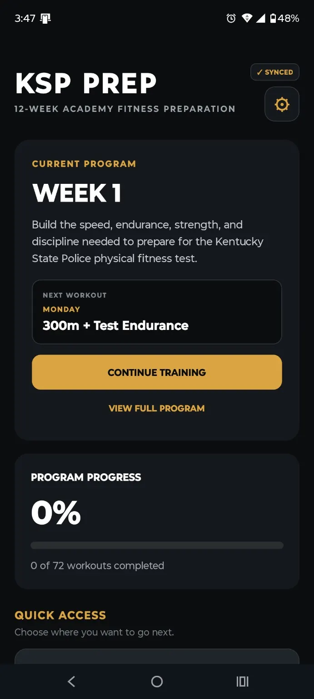
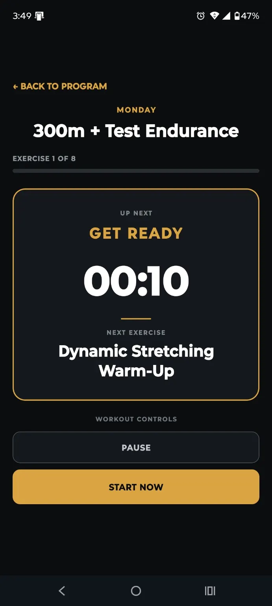
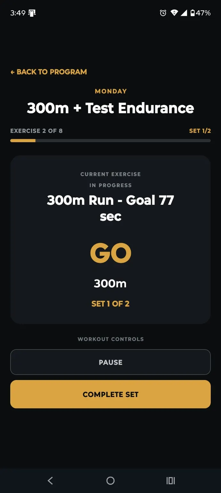
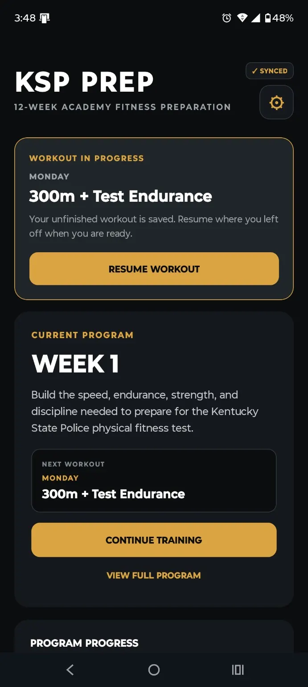
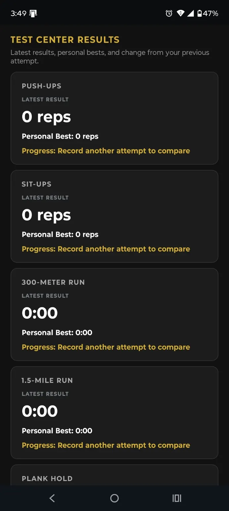

12-Week Program
72 planned workouts organized into a progressive weekly structure with a clear next workout.
KSPPrep brings training, testing, results, persistence, and account-backed progress into one focused preparation system.

The v1.0 feature set is built around continuity: know what to do, complete it, preserve it, and see what changed.
72 planned workouts organized into a progressive weekly structure with a clear next workout.
Get Ready, In Progress, and Recovery states keep timers, sets, rest, and next actions clear.
Interrupted sessions remain saved so you can return to the active workout instead of starting over.
Practice, record, and review test-focused events while keeping supplemental preparation clearly labeled.
Review recent activity, latest attempts, personal bests, and comparisons as more results are recorded.
Review the current preparation reference while being reminded to verify official requirements before testing.
Signed-in training state synchronizes across supported devices so progress follows the account.
Supported training data remains available through temporary connectivity loss and can synchronize afterward.
Sign out, reset training data, review privacy information, and permanently delete the account and associated data.
The player keeps the current task prominent while preserving session position, set count, preparation time, and recovery periods.




KSPPrep preserves unfinished workouts and keeps completed work visible in Results. Signed-in users can carry supported progress across devices.
The Test Center provides a focused place to record test-event performance, while Results keeps the latest attempts and personal bests available for review.
EXPLORE TEST CENTER

KSPPrep includes clear controls for training data and account lifecycle, supported by dedicated privacy, support, and account-deletion pages.
The planned v1.1 headline upgrade is GPS Run Tracking & Pace for distance-based training.
VIEW DEVELOPMENT ROADMAPKSPPrep is independently owned. It is not an official Kentucky State Police application and is not affiliated with, endorsed by, sponsored by, or operated by the Kentucky State Police or the Commonwealth of Kentucky.